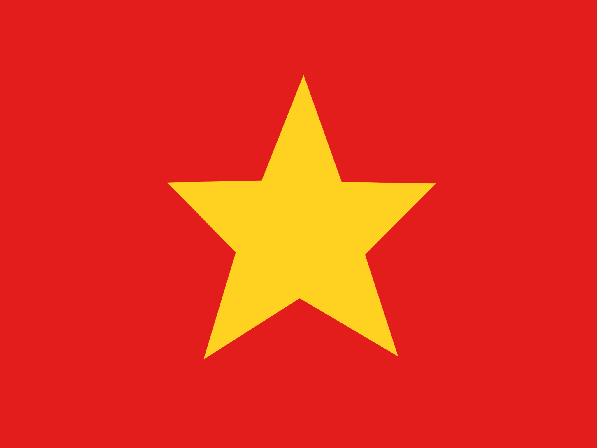

VÕ THỊ SÁU
Võ Thị Sáu Là Một Nữ Anh Hùng Hào Kiệt
Đây Là Website Do Nhóm Tạo Ra
Tiểu Sử Của Võ Thị Sáu
Võ Thị Sáu sinh năm 1933, là con ông Võ Văn Hợi và bà Nguyễn Thị Đậu.Về nguyên quán, trên bia mộ chỉ ghi tại huyện Đất Đỏ, tỉnh Bà Rịa – Vũng Tàu. Nhiều tài liệu ghi nguyên quán của chị tại xã Phước Thọ (thuộc tổng Phước Hưng Hạ), tỉnh Bà Rịa, nay thuộc thị trấn Đất Đỏ, huyện Đất Đỏ, tỉnh Bà Rịa – Vũng Tàu.Một số tài liệu khác ghi nguyên quán của chị tại xã Long Mỹ (thuộc tổng Phước Hưng Thượng), tỉnh Bà Rịa, nay thuộc Long Mỹ, Đất Đỏ, Bà Rịa – Vũng Tàu.
Chị sinh ra trong một gia đình nghèo, cha làm nghề đánh xe ngựa chở khách thuê đi Long Điền, Phước Hải, mẹ buôn bán bún bì chả tại chợ Đất Đỏ, từ nhỏ, chị phải phụ giúp cha mẹ để sinh kế. Năm chị lên 4 tuổi, gia đình chị đã thuê một căn nhà thuộc dãy phố chợ do làng xây dựng để cho thuê mượn. Căn nhà này nay thuộc thị trấn Đất Đỏ, được Nhà nước Việt Nam cho phục dựng để làm nhà lưu niệm về chị.<(_)
Quá Trình Hoạt Động
Tham Gia Kháng Chiến
Sau khi quân Pháp tái chiếm vùng Đất Đỏ vào cuối năm 1945, các anh trai của chị Sáu đã thoát li gia đình, hoạt động kháng chiến cho phong trào Việt Minh. Chị đã bỏ dở việc học, ở nhà giúp mẹ cha kiếm sống và bí mật tiếp tế cho các anh, vốn công tác trong Chi đội Giải phóng quân của tỉnh Bà Rịa.
Năm 1946, chị theo anh trai là Võ Văn Me vào khu kháng chiến, và trở thành liên lạc viên của Đội Công an xung phong Đất Quân Pháp; đặc biệt là trận tập kích bằng lựu đạn tại lễ kỉ niệm Quốc khánh Pháp ngày 14 tháng 7 năm 1949 tại Đất Đỏ, gây được tiếng vang lớn ở vùng Đất Đỏ. Năm 1947, chị chính thức trở thành đội viên Công an xung phong Đất Đỏ khi mới 14 tuổi.Từ đó, chị tham gia nhiều trận tập kích bằng lựu đạn, ám sát các sĩ quan người Pháp và Việt gian cộng tác với Thực dân Pháp tạo được tiếng vang và sự ủng hộ của quần chúng nhân dân trong vùng.
Bị Bắt Và Án Tử Hình
Vào tháng 12 năm 1949, trong một chuyến công tác tại Đất Đỏ, chị Võ Thị Sáu đã bị quân Pháp bắt được.Một số tài liệu khác ghi cô bị bắt vào tháng 2 năm 1950, sau khi chị và đồng đội dùng lựu đạn tập kích giết chết Cả Suốt và Cả Đay, là hương chức người Việt cộng tác đắc lực với quân Pháp, ở ngay phiên chợ Tết Canh Dần tại chợ Đất Đỏ.
Sau khi bị bắt, chị lần lượt bị đưa đi thẩm vấn và giam giữ tại các nhà tù Đất Đỏ, khám đường Bà Rịa và khám Chí Hòa. Tháng 4 năm 1950,tòa án binh của quân đội Pháp đã đưa chị Sáu ra xét xử với tội danh làm chết một sĩ quan Pháp và 23 người Việt cộng tác với Pháp.
Vào thời điểm xử án, chị chưa tròn 18 tuổi, vì vậy các luật sư bảo vệ chị căn cứ vào điểm này để tranh biện nhằm đưa chị thoát khỏi án tử hình. Mặc dù vậy, tòa án binh Pháp vẫn tuyên án tử hình chị.Bản án này đã gây chấn động dư luận, gây ra sự phản đối mạnh mẽ cả tại Việt Nam và ngay tại nước Pháp. Chính vì vậy, chính quyền quân sự Pháp không thể công khai thi hành bản án. Chị tiếp tục bị giam cầm tại khám Chí Hòa cho đến tận giữa tháng 1 năm 1952 thì bị chính quyền quân sự Pháp chuyển ra Côn Đảo để bí mật thi hành án tử hình khi chị đã được 19 tuổi.
Rạng sáng ngày 23 tháng 1 năm 1952, lúc khoảng 5 giờ, chị bị đưa đến văn phòng giám thị trưởng đặt trước sân Banh I để làm lễ rửa tội. Đến 7 giờ sáng,chị bị đưa đến sân Banh III phụ và bị xử bắn tại đây. Thi hài của chị Sáu được đưa ra Hàng Dương và được chôn tại huyệt đào sẵn. Trong "Sổ giám sát tử vong 1947–1954" còn lưu tại Côn Đảo, có dòng chữ ghi bằng tiếng Pháp: "Le 23 Janvier 1952: 195 G.267 Võ Thị Sáu dite CAM mort 23/1/1952 7h P.Condor Par balles..." (Tù nhân số G 267 Võ Thị Sáu bị xử bắn vào ngày 23/1/1952).
Tưởng Niệm
Sau khi chị hy sinh chính phủ Việt Nam Dân chủ Cộng hòa đã công nhận chị là liệt sĩ. Năm 1993, chị được Nhà nước Việt Nam truy tặng danh hiệu Anh hùng lực lượng vũ trang nhân dân.
Năm 1995, Hãng phim Truyền hình Thành phố Hồ Chí Minh trình chiếu bộ phim Như một huyền thoại tái hiện cuộc đời chị Võ Thị Sáu.
Khu mộ của chị Võ Thị Sáu tại Nghĩa trang Hàng Dương Côn Đảo được tôn tạo nhiều lần và trở thành một trong những điểm tham quan nổi tiếng nhất tại Côn Đảo. Do ảnh hưởng từ các giai thoại hiển linh của chị, nhà lưu niệm chị Võ Thị Sáu luôn đầy ắp các vật phẩm phụng cúng từ nhiều nơi. Thậm chí, có hẳn cả một chương trình viếng mộ chị Võ Thị Sáu tại Hàng Dương vào lúc nửa đêm với rất nhiều người tham dự.
Ngôi nhà mà gia đình cô thuê ở cuối thập niên 1930 đầu thập niên 1940, đã được Nhà nước Việt Nam mua lại đầu thập niên 1980, trùng tu lại nguyên trạng ban đầu và công nhận là di tích cấp quốc gia theo Quyết định số 15/QĐ-BT ngày 27 tháng 1 năm 1986.
Tại nhiều địa phương ở Việt Nam, tên là Võ Thị Sáu được đặt cho những con đường tại các đô thị cũng như nhiều trường học.
Đầu năm 2021, Thành phố Hồ Chí Minh tiến hành sắp xếp lại một số phường trên địa bàn thành phố. Theo đó, Phường 6, Phường 7 và Phường 8 tại Quận 3 được sáp nhập thành một phường, phường mới được đặt tên là phường Võ Thị Sáu.
Hình tượng chị Võ Thị Sáu cũng được đưa vào bài hát Biết ơn chị Võ Thị Sáu của nhạc sĩ Nguyễn Đức Toàn năm 1958. Bộ phim "Người con gái đất đỏ" được trình chiếu năm 1996 tại Việt Nam, được dựa trên những thông tin lịch sử về Võ Thị Sáu. Diễn viên đóng vai Võ Thị Sáu là ca sĩ Thanh Thúy, người được cho là đã thể hiện rất thành công hình tượng nhân vật Võ Thị Sáu.
Các Thành Viên Trong Nhóm
Nguyễn Tăng Thiện Vũ , Lê Hoàng Thiên Ân , Nguyễn Trí Toàn , Phi Đỗ Ngọc Trường Giang , Đặng thanh trúc